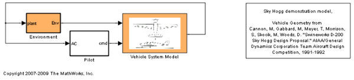
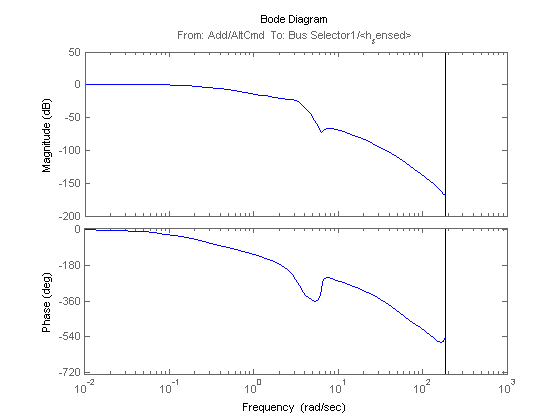
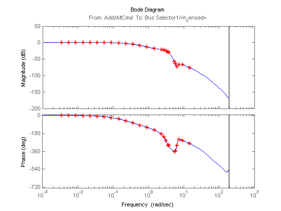

Linearization Validation in Frequency Domain Using FRESTIMATE
This demo illustrates how to use frequency response estimation in order to validate a block-by-block analytical linearization result obtained with the command LINEARIZE on the lightweight airplane model. Note that to run this demo, you need Aerospace Blockset™.
Contents
Step 1: Opening the Model
Open the Simulink® model for lightweight airplane. More information on this model can be found in the demonstration "Lightweight Airplane Design" in Aerospace Blockset demos.
scdskyhogg
mdl = 'scdskyhogg';
 Step 2: Performing Analytical Linearization of Lightweight Airplane Model
You can linearize the lightweight airplane model from the altitude command "AltCmd" to sensed height "h_sensed" using the LINEARIZE command. The linearization I/O points are already marked on the model. The model is pre-configured to use an operating point obtained using simulation snapshot at t=75.
io = getlinio(mdl); sys = linearize(mdl,io); bode(sys)
Step 3: Estimating the Frequency Response
You can validate the linearization result using FRESTIMATE to determine whether the linearization results properly capture characteristics of the nonlinear model such as the anti-resonance around 6.28 rad/s (1 Hz).
First, create a sinestream input signal. Use the linearization result as an input argument to automatically set various parameters of the sinesteam input signal, such as the set of frequencies and the number of periods for each frequency, based on the linear system.
in = frest.Sinestream(sys); in.Amplitude = 0.5
The sinestream input signal:
Frequency : [0.0034143;0.0054345;0.0086502;0.013768 ...] (rad/s)
Amplitude : 0.5
SamplesPerPeriod : [110416;69370;43582;27381 ...]
NumPeriods : [4;4;4;4 ...]
RampPeriods : 0
FreqUnits (rad/s,Hz): rad/s
SettlingPeriods : [1;1;1;1 ...]
ApplyFilteringInFRESTIMATE (on/off) : on
SimulationOrder (Sequential/OneAtATime): Sequential
Notice that 25 frequencies are picked to compute the response for, varying between 0.0034 rad/s and 14.5 rad/s. Note that by design, the frequencies that are automatically picked focus on where interesting dynamics occur (such as the anti-resonance at 6.28 rad/s). The number of periods that it will take for the system to reach steady state is estimated for each of these frequencies and varies between 1 period (for 0.0034 rad/s) and 188 periods (for 14.5 rad/s).
Then, run the FRESTIMATE command using this input signal. Note that FRESTIMATE simulates the Simulink® model with the input signal. This can take a long time in normal simulation model, but the model is pre-configured to use "Rapid Accelerator" mode to speed up the simulation. FRESTIMATE fully supports rapid accelerator simulations. On a PC with Intel® Core(TM)2 Quad 2.4GHz processor and 4GB of RAM, the simulation with "Rapid Accelerator" mode takes around 6 minutes. The same simulation in "Normal" mode takes more than 3 hours. "Rapid Accelerator" increases the speed of simulation more than 30x for this model. Uncomment the lines below to run the actual FRESTIMATE command with Rapid Accelerator mode, otherwise estimation result will be loaded from the MAT-file.
set_param(mdl,'SimulationMode','rapid'); % curdir = cd(tempdir); % sysest = frestimate(mdl,in,io); % cd(curdir); load('scdskyhogg_frestresults.mat');
Compare the analytical linearization result against the frequency response data from FRESTIMATE. The frequency response data matches well with analytical linearization result validating that anti-resonance between the frequencies 1 and 10 rad/s does exist in the actual nonlinear airplane model.
bode(sys,sysest,'r*');
 Close the model:
bdclose('scdskyhogg');